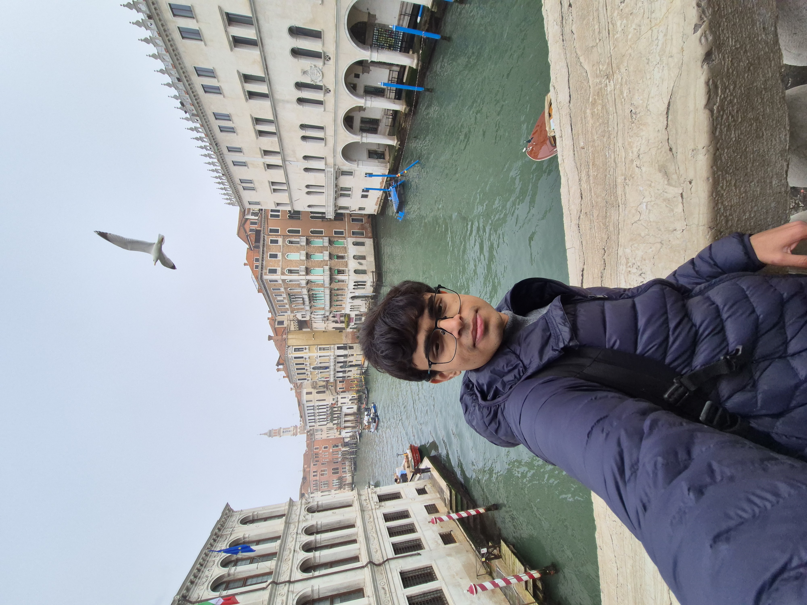
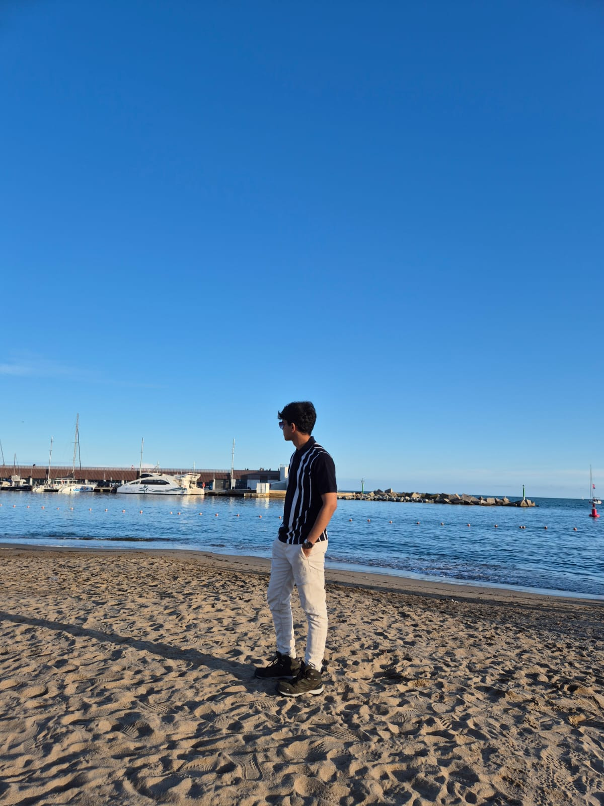
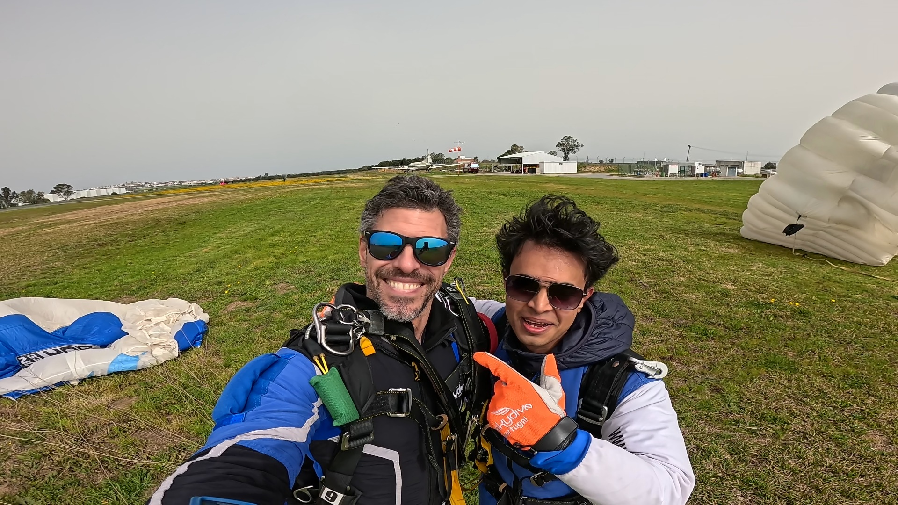

Around the world
Where I've
wandered.
From the beaches of Goa to skydiving over Portugal — a living record of places, moments, and stories in between.
🇮🇳 · Home
India
India isn't just where I was born — it's the lens through which I see the world. Growing up navigating the chaos of Mumbai shaped a certain kind of resilience in me.
Studying at IIT Bombay has been one of the great privileges of my life. The institute sits on the edge of Powai Lake, and there's something quietly magical about cycling past flamingos on your way to a thermodynamics lecture.
The food, the festivals, the languages — India is twenty countries in one.
🇨🇭 · 2026 — Exchange
Switzerland
Coming to ETH Zürich for my semester exchange was a dream I hadn't quite let myself believe in. The city feels almost impossibly beautiful — trams, cobblestone lanes, and mountains on the horizon.
The academic culture here is serious and rigorous in a way that pushes you. On weekends I'd escape into the Alps — hiking above the clouds, looking down at valleys that look like they were painted.
🇫🇷 · 2024
France
Every cliché about Paris is true, and none of it prepares you for the actual thing. I visited on a long weekend from Zürich — just three days, but each felt stretched with experience.
The Louvre is overwhelming in the best sense. What I didn't expect was how much I'd love the everyday Paris — the cafés, the bouquinistes along the Seine, the way people linger over meals.


🇮🇹 · 2024
Italy
Italy hit different. The Colosseum is genuinely staggering in person — photographs don't capture the scale. Venice was surreal: a city with no cars, just water and stone and light bouncing off everything.
I got genuinely lost in the Venetian alleyways and it was the best kind of lost. And the food — I had not had good pasta before Italy.
<



🇪🇸 · 2024
Spain
Standing inside the Sagrada Família was one of the most disorienting and beautiful experiences of my life. The light through the stained glass turns the interior into something otherworldly.
Spanish culture runs on a different clock — dinner at 10pm, tapas until midnight. As someone from India, I felt immediately at home. Barcelona rewards slow wandering.



🇵🇹 · 2024
Portugal
Portugal felt like Europe's best-kept secret. And yes — I went skydiving here. Jumping out of a plane above the Atlantic coast at 14,000 feet is something I will never forget.
Sintra was a revelation — fairytale palaces draped across forested hills. I heard fado music live one evening in a small Alfama restaurant. It's music of longing, and it lodged somewhere deep.



🇩🇪 · 2024
Germany
Germany has two faces and I got to see both. Munich is warm and convivial — the English Garden vast and somehow feeling like a secret. The beer gardens have a communal spirit I found genuinely lovely.
Berlin is something else. The weight of 20th century history presses on every corner. The Holocaust Memorial, Checkpoint Charlie — history here is physical and present, demanding engagement.